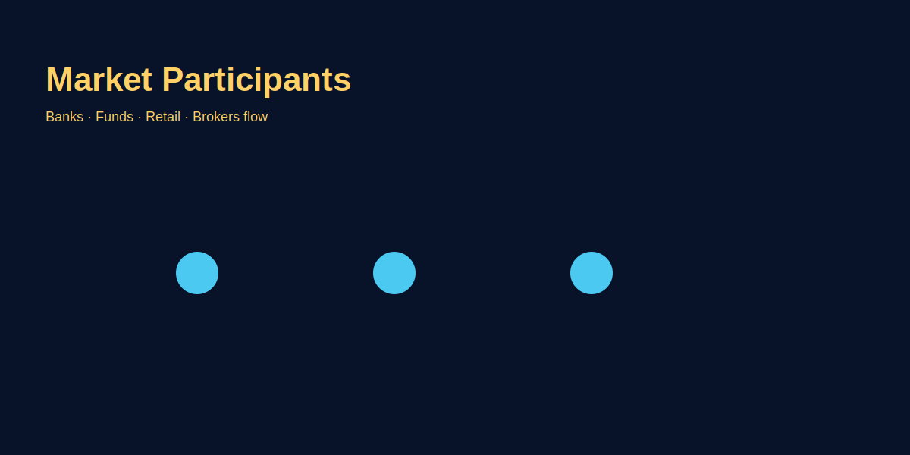

Forex Market Participants
Problem-based introduction
Beginners often wonder who actually moves forex prices — banks, hedge funds, or retail traders? Yeh samajhna zaroori hai because participant behaviour affects liquidity, slippage and trade planning. Is article mein hum different participants ko simple Hinglish mein cover karenge and explain karenge trading pe kya practical impact padta hai.
Step-by-step explanation
- Central banks: Policy decisions and reserves management can create large moves (e.g., interest rate changes).
- Commercial banks: Provide liquidity and execute large client flows.
- Hedge funds & institutions: Speculative and macro trades; often move markets in larger chunks.
- Retail traders: Smaller in size, but collectively visible; often late to moves and can create short-term volatility.
- Brokers & liquidity providers: Route orders and provide pricing; spreads and execution quality depend on them.
Real trading logic (GOLD example)
GOLD (XAU/USD) reacts strongly to central bank signals and institutional flows. For a retail trader:
- Watch macro calendars for central bank talks; avoid taking large positions just before scheduled announcements.
- Prefer limit orders in low-liquidity times to avoid slippage.
- Understand your broker's execution model—ECN vs market maker affects fills and spreads.
Image-based examples (mandatory)
Image explanation: arrows from central banks → institutions → retail; liquidity pools highlighted.
Common Mistakes
- Assuming retail orders move macro trends.
- Not checking execution reports and comparing brokers.
- Overtrading around illiquid hours expecting tight spreads.
Pro Tips
- Track who is likely to be active in the current session and adapt position size.
- Maintain a journal that records liquidity conditions and slippage for each trade.
Risk Warning
Market participants may act unpredictably. Use risk controls and do not assume past behaviour will always repeat.
SEO FAQs
- 1. Kaun sabse zyada influence karta hai forex prices?
- A: Institutional flows and central bank actions generally have the largest influence.
- 2. Kya retail traders ko market ke liye worry hona chahiye?
- A: Nahi, but understand liquidity and avoid trading large sizes in low-liquidity conditions.
- 3. Broker ka role kya hota hai?
- A: Brokers provide price feeds, handle orders and affect spreads/execution.
- 4. Kya institutions always profit?
- A: No — institutions take risk and also face drawdowns and operational limits.